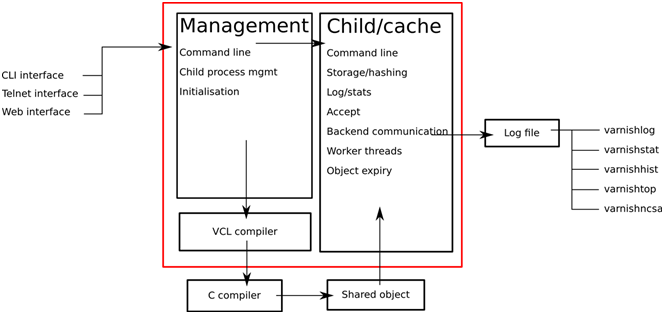
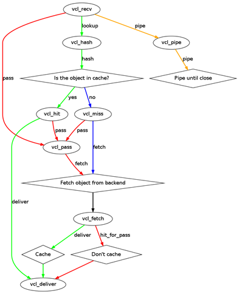
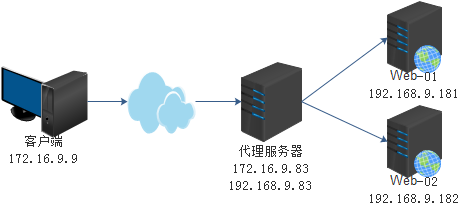
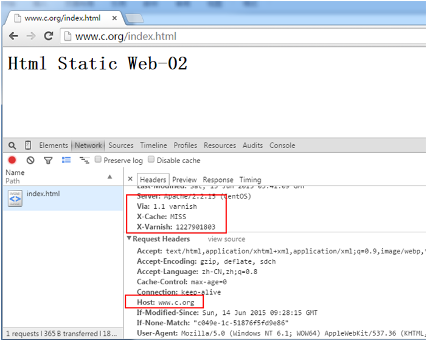
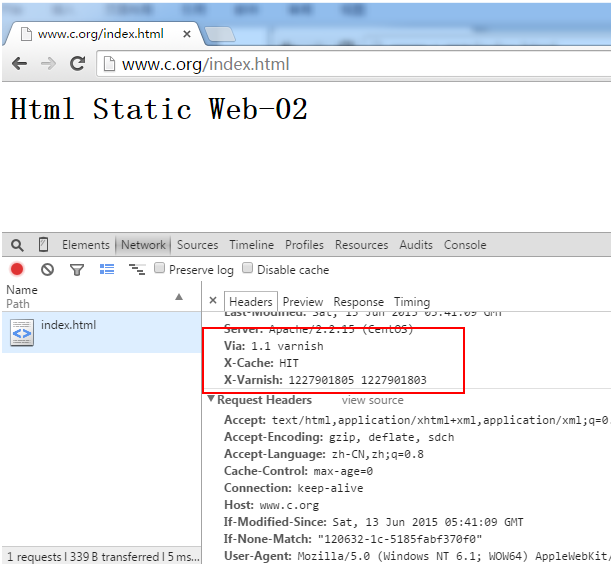
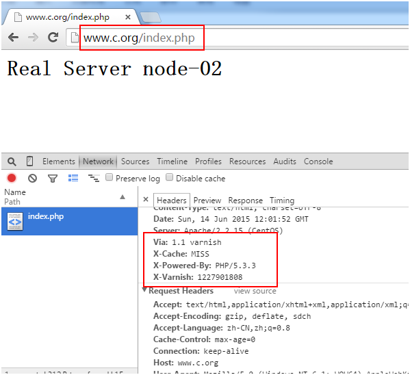

Linux集群之varnish应用
varnish简介
varnish是一款高性能且开源的反向代理服务器和HTTP加速器，其采用全新的软件设置体系机构，和现的的硬件体系紧密配合，与传递的squid相比，varnish相比，varnish具有性能更高、速度更快、管理更加方便等诸多优点。
varnish软件体系架构

varnish主要运行两个进程：Management进程和Child进程。
Management进程主要实现应用新的配置、编译VCL、监控varnish、初始化varnish以及提供一个命令行接口等。Management进程会每隔几秒钟探测一下Child进程以判断其是否正常运行，如果在指定的时长内未得到Child进程的回应，Management将会重启此Child进程。
Child进程包含多种类型的线程，常见的如：
- Acceptor线程：接收新的连接请求并响应；
- Worker线程：child进程会为每个会话启动一个worker线程，因此，在高并发的场景中可能会出现数百个worker线程甚至更多；
- Expiry线程：从缓存中清理过期内容；
VCL
VCL是Varnish Configuration Language，即Varnish配置语言，它提供了一个控制Varnish工作的接口，用于编写缓存策略配置工具，它是一个基于“域”的简单编程语言，“域”在一情况下称为varnish的状态引擎。
下图来自varnish官方，可以情况的看到每一个状态的转换。

- VCL状态引擎
| 状态 | 说明 |
|---|---|
| vcl_recv | 请求被接入，但在其被分析、处理完成之前，决定选择一下步的策略动作 |
| vcl_pipe | 不经由varnish直接将请求发往后端主机的时候调用，请求和内容不做任何改变，如同为客户端和backend建立一个管道 |
| vcl_pass | 将请求直接发给backend，而不是用缓存中的数据响应客户端 |
| vcl_hash | 对URL进行hash，可以自定义hash键 |
| vcl_hit | 在缓存中找到对象时执行的动作 |
| vcl_miss | 未在缓存中找到对象时执行的动作 |
| vcl_fetch | 从后端主机获取内容，并判断是否缓冲此内容，然后响应给客户端 |
| vcl_deliver | 响应客户端时执行的动作 |
| vcl_error | 在varnishi上合成错误响应页时，调用此函数 |
常用变量
- 在任何状态引擎中均可使用
| .now | 获取当前系统当前时间 |
| .host | 后端主机的IP地址或主机名 |
| .port | 后端主机的端口号或服务名 |
- 用于处理请求阶段（vcl_recv，vcl_hash，vcl_pass，vcl_pipe）
| client.ip | 客户端的IP地址 |
| server.hostname | varnish缓存服务器的主机名 |
| server.ip | varnish缓存服务器的IP地址 |
| server.port | varnish缓存服务器的端口 |
| req.request | 请求方法（例:GET，HEAD） |
| req.url | 请求的URL |
| req.proto | HTTP协议版本 |
| req.backend | 用于服务此次请求的后端主机； |
| req.backend.healthy | 后端主机健康状态； |
| req.http.HEADER | 引用请求报文中指定的首部; （如:eq.http.host） |
| req.can_gzip | 客户端是否能够接受gzip压缩格式的响应内容； |
| req.restarts | 此请求被重启的次数；（如重定向之后就要进行restart） |
- varnish向backend主机发起请求前可用的变量
| bereq.request | 请求方法 |
| bereq.url | |
| bereq.proto | |
| bereq.http.HEADER | |
| bereq.connect_timeout | 等待与backend建立连接的超时时长 |
- backend主机的响应报文到达本主机(varnish)后，将其放置于cache中之前可用的变量
| beresp.do_stream | 流式响应； |
| beresp.do_gzip | 是否压缩之后再存入缓存；默认为false |
| beresp.do_gunzip | 当收到后端服务器的压缩报文时，是否解压之后在存入缓存，默认为false |
| beresp.http.HEADER | |
| beresp.proto | |
| beresp.status | 响应状态码 |
| beresp.response | 响应时的原因短语 |
| beresp.ttl | 响应对象剩余的生存时长，单位为second； |
| beresp.backend.name | 此响应报文来源backend名称； |
| beresp.backend.ip | 此响应报文来源backend IP地址 |
| beresp.backend.port | 此响应报文来源backend 端口 |
| beresp.storage |
- 缓存对象存入cache之后可用的变量
| obj.proto | 响应时的协议 |
| obj.status | 响应时的状态码 |
| obj.response | 响应时的原因短语 |
| obj.ttl | |
| obj.hits | 缓存对象被用于当着响应时的次数 |
| obj.http.HEADER |
- 4.6 在决定对请求键做hash计算时可用的变量
| req.hash | 指明把什么当着hash键来查询缓存的键 |
- 4.7 在为客户端准备响应报文时可用的变量
| resp.proto |
| resp.status |
| resp.response |
| resp.http.HEADER |
- 快速记忆表:Variable availability in VCL
| Variable | recv | fetch | pass | miss | hit | error | deliver | pipe | hash |
|---|---|---|---|---|---|---|---|---|---|
| req.* | R/W | R/W | R/W | R/W | R/W | R/W | R/W | R/W | R/W |
| bereq.* | R/W | R/W | R/W | R/W | |||||
| obj.hits | R | R | |||||||
| obj.ttl | R/W | R/W | |||||||
| obj.grace | R/W | ||||||||
| obj.* | R | R/W | |||||||
| berresp.* | R/W | ||||||||
| resp.* | R/W | R/W |
安装varnish
rpm安装varnish
varnish-3.0.6-1.el6.x86_64.rpm varnish-docs-3.0.6-1.el6.x86_64.rpm varnish-libs-3.0.6-1.el6.x86_64.rpm rpm -ivh varnish-3.0.6-1.el6.x86_64.rpmvarnish-libs-3.0.6-1.el6.x86_64.rpm varnish-docs-3.0.6-1.el6.x86_64.rpm #可能会依赖于gcc
- 查看相应生成的文件
/etc/rc.d/init.d/varnishlog #把内存中的日志读入到日志文件 /etc/rc.d/init.d/varnishncsa /etc/rc.d/init.d/varnish #服务脚本程序 /etc/sysconfig/varnish #varnish配置文件 /etc/varnish/default.vcl #varnish策略文件
编译安装varnish
cd /var/tmp wget http://repo.varnish-cache.org/source/varnish-3.0.3.tar.gz tar xzf varnish-3.0.3.tar.gz cd varnish-3.0.3 sh autogen.sh sh configure make make test make install
#!/bin/bash
#进入工作目录
cd /dist/dist
#下载安装包
wget http://bbs.osapub.com/down/varnish-3.0.0.tar.gz &> /dev/null
cd /dist/src
rm -fr varnish-3.0.0
export PKG_CONFIG_PATH=/usr/local/lib/pkgconfig
tar zxvf ../dist/varnish-3.0.0.tar.gz
cd varnish-3.0.0
#编译参数可以根据自己需要定制
./configure -prefix=/usr/local/varnish -enable-debugging-symbols -enable-developer-warnings -enable-dependency-tracking
make && make install
if [ "$?" == "0" ]; then
echo "varnish-3.0.0安装成功." >> ./install_log.txt
else
echo "varnish-3.0.0安装失败." >> ./install_log.txt
exit 1
fi
#设置启动、重启脚本
cat > /root/varnish_restart.sh <<EOF
#!/bin/bash
pkill varnish
pkill varnish
ulimit -SHn 51200
/usr/local/varnish/sbin/varnishd -n /data/varnish -f /usr/local/varnish/vcl.conf \
-a 0.0.0.0:81 -s malloc,12G -g www -u www -w 4000,12000,10 -T 127.0.0.1:3500 \
-p http_max_hdr=256 -p http_req_hdr_len=8192
EOF
cat > /root/varnish_start.sh <<EOF
#!/bin/bash
ulimit -SHn 51200
/usr/local/varnish/sbin/varnishd -n /data/varnish -f /usr/local/varnish/vcl.conf \
-a 0.0.0.0:81 -s malloc,12G -g www -u www -w 4000,12000,10 -T 127.0.0.1:3500 \
-p http_max_hdr=256 -p http_req_hdr_len=8192
EOF
chmod 755 /root/varnish*
启动配置
# /etc/sysconfig/varnish
NFILES=131072 #所能打开的文件数，会自动调整
MEMLOCK=82000 #内存锁空间
NPROCS="unlimited" #单个用户或进程所能运行的线程数
RELOAD_VCL=1 #是否自动装载缓存策略文件，当使用脚本启动时varish会自动的去装载配置文件
VARNISH_VCL_CONF=/etc/varnish/default.vcl #默认读取的缓存策略文件路径
VARNISH_LISTEN_PORT=6081 #varnish监听的端口，如http的80端口
VARNISH_ADMIN_LISTEN_ADDRESS=127.0.0.1 #用于CLI的管理的地址
VARNISH_ADMIN_LISTEN_PORT=6082 #用于CLI的管理的端口
VARNISH_SECRET_FILE=/etc/varnish/secret #密码文件路径
VARNISH_MIN_THREADS=50 #启动的最小线程数
VARNISH_MAX_THREADS=1000 #最多的线程数，即为最大的并发数，不能超出5000，过了就不维定
VARNISH_THREAD_TIMEOUT=120 #空闲线程空闲超时时间
VARNISH_STORAGE_FILE=/var/lib/varnish/varnish_storage.bin #varnish缓存文件，即为缓存类型为文件
VARNISH_STORAGE_SIZE=1G #缓存大小
VARNISH_STORAGE="file,${VARNISH_STORAGE_FILE},${VARNISH_STORAGE_SIZE}" #存储类型
VARNISH_TTL=120
DAEMON_OPTS="-a${VARNISH_LISTEN_ADDRESS}:${VARNISH_LISTEN_PORT} \
-f ${VARNISH_VCL_CONF} \
-T ${VARNISH_ADMIN_LISTEN_ADDRESS}:${VARNISH_ADMIN_LISTEN_PORT} \
-t ${VARNISH_TTL} \
-w${VARNISH_MIN_THREADS},${VARNISH_MAX_THREADS},${VARNISH_THREAD_TIMEOUT} \
-u varnish -g varnish \
-S ${VARNISH_SECRET_FILE} \
-s ${VARNISH_STORAGE}"
vcl_recv
解析默认的defaults.vcl文件中的vcl_recv中的内容:
sub vcl_recv {
if (req.restarts == 0) { #重启次数为0，即为第一次访问
# 添加client.ip，用于在后端服务器记录真实的客户端的IP地址
if(req.http.x-forwarded-for) {
#req.http.x-forwarded-for的值为空或为NULL，即为真
#当X-Forwarded-For首部信息中有值，就在其值后加上一个"，"和客户端的IP地址
set req.http.X-Forwarded-For = req.http.X-Forwarded-For+ ", " + client.ip;
}else{
set req.http.X-Forwarded-For = client.ip;
}
}
#不是标准的HTTP请求方法，直接送往后端服务器
if (req.request != "GET" &&
req.request != "HEAD" &&
req.request != "PUT" &&
req.request != "POST" &&
req.request != "TRACE" &&
req.request != "OPTIONS" &&
req.request != "DELETE") {
/* Non-RFC2616 or CONNECT which is weird. */
return (pipe);
}
#不是GET和HEAD就不查询缓存，直接送往后端服务器
if (req.request != "GET" && req.request !="HEAD") {
/* We only deal with GET and HEAD by default */
return (pass);
}
#当有认证或cookie时不查询缓存，直接送往后端服务器
if (req.http.Authorization || req.http.Cookie) {
/* Not cacheable by default */
return (pass);
}
#任何一个函数在遇到return时就会返回，以下都不在执行；
return (lookup);
}
vcl_hash
默认的defaults.vcl中的vcl_hash
subvcl_hash {
hash_data(req.url); #获取请求的URL
if (req.http.host) { #如果请求的host不空
hash_data(req.http.host);
} else {
hash_data(server.ip);
}
return (hash); #重新回到hash从hash计算
}
vcl_fetch
默认的defaults.vcl中的vcl_fetch
sub vcl_fetch {
#ttl <= 0s :beresp后端主机的响应报文收到放到缓存之前
if (beresp.ttl <= 0s ||
beresp.http.Set-Cookie ||
beresp.http.Set-Cookie ||
beresp.http.Vary == "*") {
/*
* Mark as"Hit-For-Pass" for the next 2 minutes
*/
set beresp.ttl = 120 s;
return (hit_for_pass);
}
return (deliver);
}
varnish实验
实验拓扑

实验规划
- 实现动静分离，Web-01用于解析php，Web-01和Web-02都解析静态的页面
- 缓存静态内容，只缓存GET和HEAD方法，不缓存带有cookie的内容，URL中包含静态资源的，不缓存动态资源的请求
- 增加一个HTTP首部信息，显示是否命中
- 设置清理缓存PURGE
- 实现后端主机的健康检查
defaluts.vcl
probe healthcheck { #定义健康检测方法
.url = "/index.html";
.interval = 60s;
.timeout = 0.3 s;
.window = 8;
.threshold = 3;
.initial = 3;
.expected_response = 200;
}
backend PHP { #定义后端服务器
.host = "192.168.9.181";
.port = "80";
.probe = healthcheck;
}
backend web {
.host = "192.168.9.182";
.port = "80";
.probe = healthcheck;
}
director svrs random { #定义服务器组
{.backend = PHP; .weight = 1;}
{.backend = web; .weight = 1;}
}
acl purgers { #定义purger的访问控制列表
"127.0.0.1";
"192.168.9.0"/24;
}
subvcl_recv {
if (req.restarts == 0) {
if (req.http.x-forwarded-for) {
setreq.http.X-Forwarded-For =
req.http.X-Forwarded-For + ", "+ client.ip;
} else {
setreq.http.X-Forwarded-For = client.ip;
}
}
#如果是PURGE方法，且不是ACL中的，直接返回错误，如果是ACL中的将继续
if (req.request == "PURGE") {
if (!client.ip ~ purgers) {
error 405 "Method not allowd";
}
return(lookup);
}
#非指定的HTTP请求访求，将直接访问后端服务器
if (req.request != "GET" &&
req.request != "HEAD" &&
req.request != "PUT" &&
req.request != "POST" &&
req.request != "TRACE" &&
req.request != "OPTIONS" &&
req.request != "PURGE" &&
req.request !="DELETE") {
return (pipe);
}
#如果不是GET、HEAD方法，就不查缓存
if (req.request != "GET" && req.request !="HEAD") {
return (pass);
}
#如果是认证和cookie则不查缓存
if (req.http.Authorization || req.http.Cookie) {
return (pass);
}
#如果访问php页面，就不查缓存，将会直接指向后端服务器处理请求
if (req.url ~ "\.php($|\?)") {
setreq.backend = PHP;
return(pass);
}
#指定后端响应的服务器组
set req.backend = svrs;
return (lookup);
}
subvcl_pass {
#如果PURGE被送至此次将会被pass
if (req.request == "PURGE") {
error502 "PURGE on a passed object";
}
return (pass);
}
subvcl_hit {
#purge函数就是移除这个obj对应的所有变量缓存
if (req.request == "PURGE") {
purge;
error200 "Purged";
}
return (deliver);
}
subvcl_miss {
#直接通过vcl_error返回客户端
if (req.request == "PURGE") {
purge;
error404 "Not in cache";
}
return (fetch);
}
sub vcl_fetch {
#如果响应的ttl小于0秒或者使用了cookie或Very，则不缓存直接返回给客户端
if (beresp.ttl <= 0s ||
beresp.http.Set-Cookie ||
beresp.http.Vary == "*") {
set beresp.ttl = 120 s;
return (hit_for_pass);
}
#对于GET方法与请求的不同静态资源使用不同的缓存时长
if (req.request == "GET") {
if(req.url ~ "\.(css|js|html|htm)") {
setberesp.ttl = 10m;
}
elseif(req.url ~ "\.(gif|jpg|jpeg|png)") {
setberesp.ttl = 30m;
}
elseif(req.url ~ "\.ico") {
setberesp.ttl = 30d;
}
}
return (deliver);
}
subvcl_deliver {
#返回客户端之前，添加一个HTTP首部信息
if (obj.hits>0) {
setresp.http.X-Cache = "HIT";
} else {
set resp.http.X-Cache = "MISS";
}
return (deliver);
}
启动参数
- /etc/sysconfig/varnish
VARNISH_LISTEN_PORT=80
VARNISH_MEM_SIZE=32M
VARNISH_STORAGE="malloc,${VARNISH_MEM_SIZE}"
启动varnish
service varnish start
Starting Varnish Cache: [ OK ]
ss -tanp |grep"80"
LISTEN 0 128 :::80 :::* users:(("varnishd",4134,8))
LISTEN 0 128 *:80 *:* users:(("varnishd",4134,7))
服务页面显示信息
Web服务器的配置域名是www.c.org，需要配置DNS服务器或更改hosts文件。
cat index.html index.php <h1>Html Static Web-01</h1> <h1>Real Server node-01</h1> cat index.html index.php <h1>Html Static Web-02</h1> <h1>Real Server node-02</h1>
访问静态页面
第一次访问时未命令中缓存，因为缓存中根据就没有缓存到有内容。

当再次刷新浏览器是查看响应报文首部信息已经是"HIT"。

访问动态内容
当访问后缀是php页面时，varnish不会缓存内容，所以不断的刷新都会是"MISS"

purge清理缓存
当更新了后端的Web服务器的内容时，就需要清理一些缓存信息，让用户访问的页面内容是最新的，使用curl命令通过-X选项传递一个HTTP首部信息。
需要在hosts文件中添加一条www.c.org的解析，因为varnish缓存是根据用户请求的URL作为键的，当你使用IP地址又是一个新的键了，所以是无法清理缓存中的信息。
curl -I -X PURGE http://varniship/path/to/someurl
- 使用crul访问www.c.org/index.html页面,查看请求的响应首部信息
curl -I www.c.org/index.html HTTP/1.1 200 OK Server: Apache/2.2.15 (CentOS) Last-Modified: Sat, 13 Jun 2015 05:41:09GMT ETag: "120632-1c-5185fabf370f0" Content-Type: text/html; charset=UTF-8 Content-Length: 28 Accept-Ranges: bytes Date: Sun, 14 Jun 2015 12:09:40 GMT X-Varnish: 1227901809 Age: 0 Via: 1.1 varnish Connection: keep-alive X-Cache: MISS #第一次请求未命中
curl -I www.c.org/index.html HTTP/1.1 200 OK Server: Apache/2.2.15 (CentOS) Last-Modified: Sat, 13 Jun 2015 05:41:09GMT ETag: "120632-1c-5185fabf370f0" Content-Type: text/html; charset=UTF-8 Content-Length: 28 Accept-Ranges: bytes Date: Sun, 14 Jun 2015 12:09:43 GMT X-Varnish: 1227901810 1227901809 Age: 2 Via: 1.1 varnish Connection: keep-alive X-Cache: HIT #再次请求命中
- 清理index.html缓存
curl -I -X PURGE www.c.org/index.html HTTP/1.1 200 Purged #第一次清理成功 Server: Varnish Content-Type: text/html; charset=utf-8 Retry-After: 5 Content-Length: 380 Accept-Ranges: bytes Date: Sun, 14 Jun 2015 12:14:04 GMT X-Varnish: 1227901815 Age: 0 Via: 1.1 varnish Connection: close X-Cache: MISS
curl -I -X PURGE www.c.org/index.html HTTP/1.1 404 Not in cache #第二次清理告知没有缓存 Server: Varnish Content-Type: text/html; charset=utf-8 Retry-After: 5 Content-Length: 398 Accept-Ranges: bytes Date: Sun, 14 Jun 2015 12:14:07 GMT X-Varnish: 1227901816 Age: 0 Via: 1.1 varnish Connection: close X-Cache: MISS
小结
varnish是一个非常优秀强大的缓存服务器，它已经在大型的生产环境中得到了广泛的运用，已经经得起考验，不同的业务要根据不同的业务进行分析，一个好的缓存服务器能命中80%的内容，这样对后端服务器的访问的压力是有多么的重要是你可以想一想的，现在的互联网产业是严重的依赖于缓存服务器。